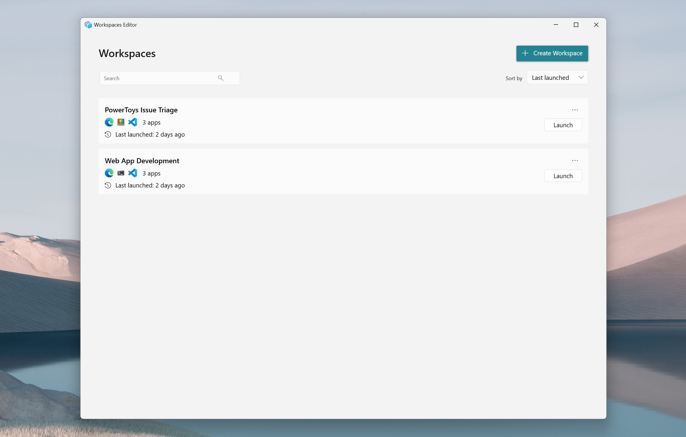
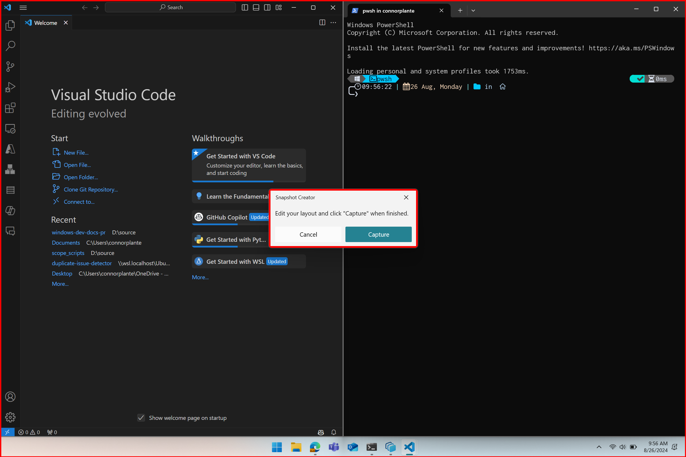
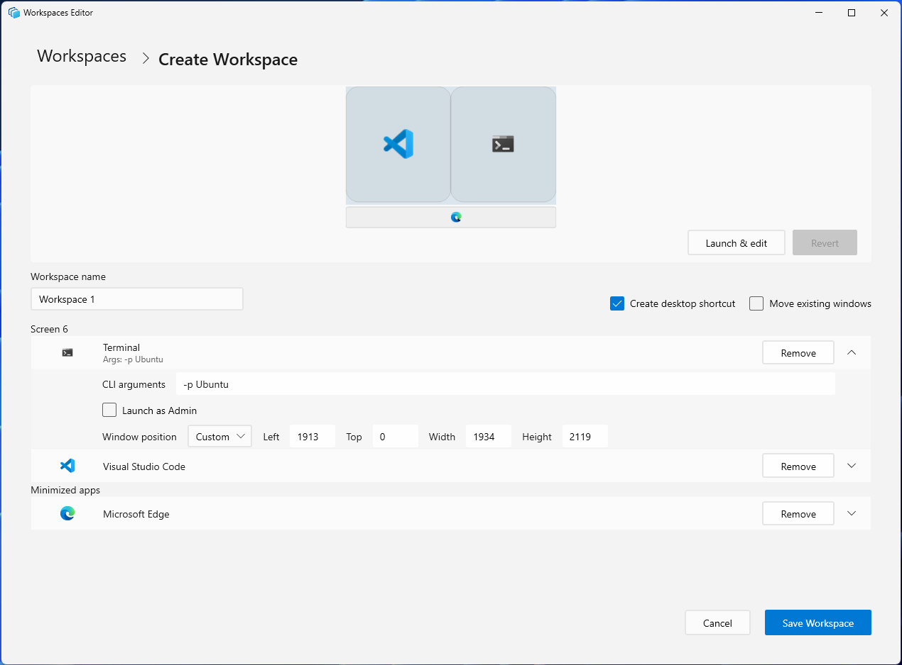
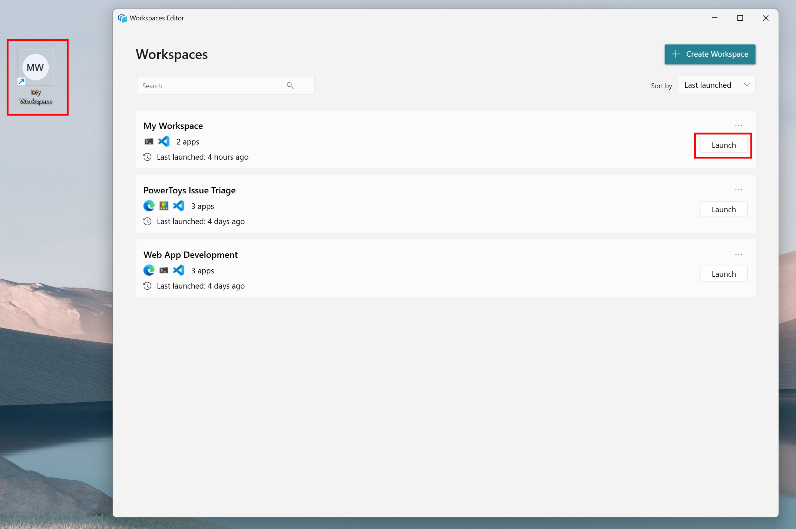
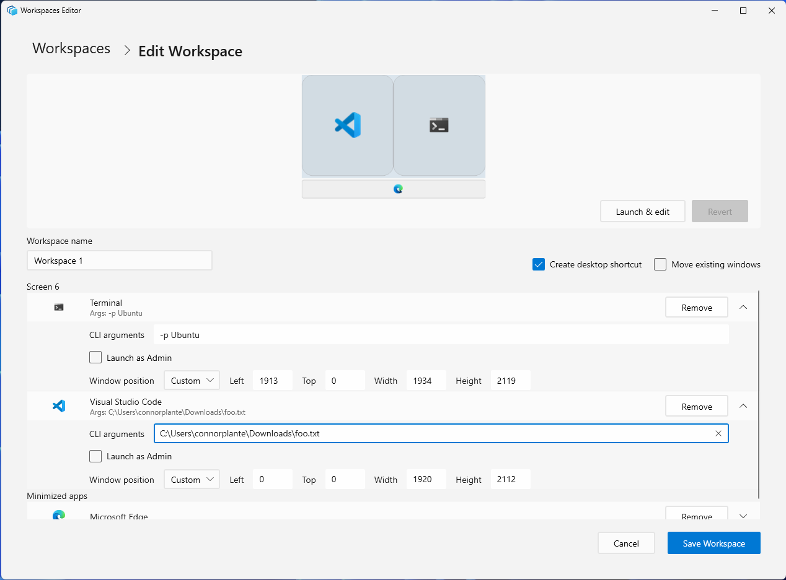

Workspaces utility for Windows desktop management
PowerToys Workspaces is a desktop manager utility that helps you launch applications to custom positions and configurations with a single click. This Windows desktop management tool gets you into your ideal desktop state for any project or activity faster. You can capture your desktop state as a new workspace using the editor, add arguments to apps to configure their state on launch, and pin the workspace as a desktop shortcut for quick-launching.
Enabling
To start using Workspaces, enable it in the PowerToys Settings.
Creating a new workspace
Open the editor using by selecting "Launch editor" from PowerToys Workspaces settings or by using the shortcut ⊞ Win+Ctrl+`.

Click "+ Create workspace" to invoke the Capture experience - in this view, the desktop is fully functional and you are able to open, close, and reposition apps to get your apps into the desired layout. Once you have arranged the apps how you would like, select "Capture".

After capturing, you will enter the editor where you can name the workspace, adjust window sizes, add command line interface (CLI) arguments, remove apps, and create a desktop shortcut before finally saving the workspace.

Launching a workspace
Launch a workspace by either selecting "Launch" from the list of workspaces in the editor, or by using a desktop shortcut if you chose to create one when saving the workspace originally. Shortcuts can also be pinned to the taskbar for convenient launching.

While the workspace launches, PowerToys will display a dialog box presenting the status of each app. Each app will have one of the following statuses:
| Symbol | Status |
|---|---|
| The app has successfully launched and repositioned. | |
| The app is in the process of launching and moving to the correct position. | |
| The app has failed to launch. |
The dialog box will dismiss itself once all apps have properly launched and been arranged in their desired positions. You can also dismiss the dialog yourself at any time, or use it to cancel the launch.
Editing a workspace
Start by launching the editor and selecting the workspace you would like to edit. Once in the edit view for that layout, you can remove apps, modify the window positions manually via each app's dropdown menu, or select "Launch & Edit" to launch the layout and re-enter the same Capture experience as when it was first created.
Note
Capturing the adjusted workspace will perform a clean re-capture, and all previous CLI arguments and settings will be removed. The re-capture can be reverted to return to the original workspace if necessary.
Adding CLI arguments to applications
To launch apps in a desired state, CLI arguments can be added to each app in their respective dropdown menus. These arguments are specific to the app itself and are called alongside the app when launched. In the below example, Visual Studio Code (VS Code) is launched to the file provided at the path and Terminal is launched to the "Ubuntu" profile.

You can find more information on VS Code and Terminal CLI arguments can be found below:
Tip
Each app will have its own set of command line arguments that can be used to modify the launch behavior, but many apps use similar patterns. For example, try passing a comma-separated list of URLs to Edge and other browsers to launch the browser with those tabs open, or pass a filepath to an Office application, text editor or IDE to launch directly to that file.
Launching apps as admin
To launch apps as admin, select the "Launch as Admin" box in the respective app's dropdown menu. On launch, a User Account Control (UAC) dialog will be shown for each app that has been set to launch as admin.
Important
There is a known issue where apps that launch as admin are unable to be repositioned to the desired layout. The team is actively working on a fix for an upcoming release.
Opening new windows vs. repositioning existing windows
Different apps may behave differently on launch if there is already an existing instance of the application open on the desktop - some apps will reposition the existing instance, whereas others may launch a new instance by default. If the "Move existing windows" option is enabled for the workspace, any existing apps are moved to the desired position in the workspace and the remaining apps are launched as usual. For tailoring to user preference, the recommendation is to handle launch behavior via available CLI arguments.
For example, VS Code will launch a new window by default, but should a user prefer to move the existing window, the --reuse-window CLI argument can be added to VS Code's CLI arguments.
Note
Some apps are "single-instance" applications, meaning that there may only be one active instance of the app open at a time. One example of this is the Windows Settings app. These apps, if already active, will be repositioned by default, and new instances cannot be launched.
Frequently Asked Questions
The following are some common questions and answers about PowerToys Workspaces:
Why do app windows launch and then jump to the positions I saved them in?
PowerToys cannot tell an app to launch to a specific position. What we can do is launch an app first, and then give an instruction to move and resize it to a certain position. However, this results in the user visibly seeing the process on-screen. To help with this limitation, we added the dialog box during launch, which displays the launch status of each app.
My windows were snapped when I saved my workspace, but when I launch the workspace from a clean state they are not snapped. Why is this?
PowerToys uses publicly available APIs and the FancyZones engine under the hood for positioning apps. Unfortunately, this does not include snapping capabilities.
How can I pin a workspace to the taskbar?
You can create a desktop shortcut for your workspace first, and then pin it to the taskbar. Pinning a workspace to the taskbar directly is not currently supported.
Settings
| Setting | Description |
|---|---|
| Activation shortcut | To change the default hotkey, click on the control and enter the desired key combination. |
Install PowerToys
This utility is part of the Microsoft PowerToys utilities for power users. It provides a set of useful utilities to tune and streamline your Windows experience for greater productivity. To install PowerToys, see Installing PowerToys.